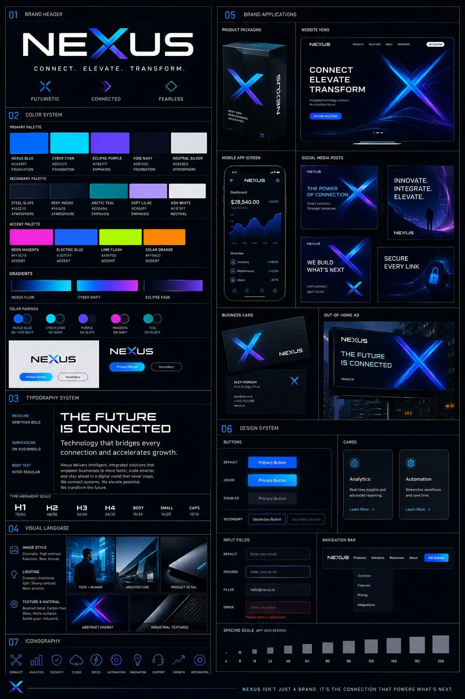
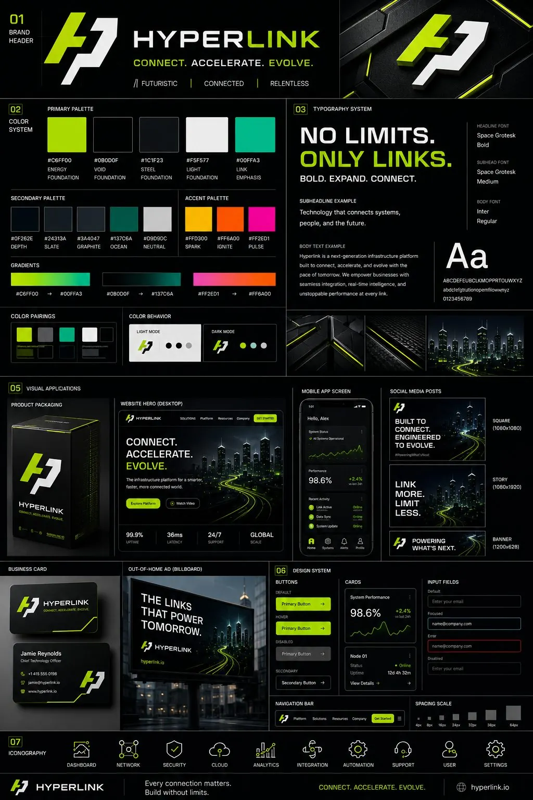

Illustrative case · Software
A clearer process for the team.
From requests and documents to approval — in one connected flow.
Explore detailsRequests
In progress
Approval
Projects
Visual concepts and examples of the kinds of solutions we build.
Illustrative solution examples, without client names or private information.
Illustrative case · Software
From requests and documents to approval — in one connected flow.
Explore detailsSolution examples
The goal was to make access, networking, and support less dependent on improvisation.
Solution examples
The team needed less manual work and one clear way to report.
Solution examples
The main need was more controlled access, more standardized devices, and less risk in daily work.
Solution examples
We combine technical structure with creative execution so communication looks as serious as the system behind it.
Solution examples
An example structure: a clear offer, visual evidence and an easy next step.
Explore services
Visual concept

Visual concept
CAPABILITIES